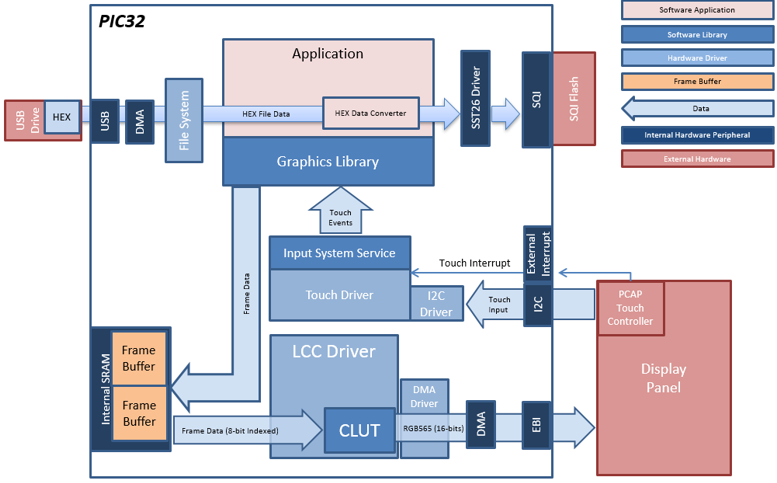
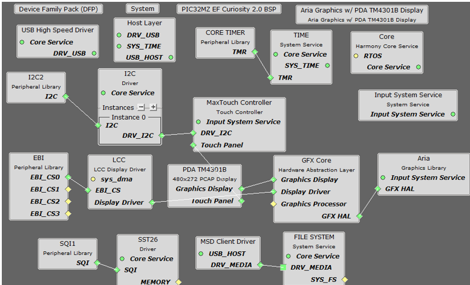
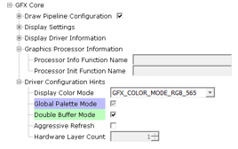
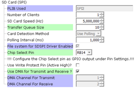
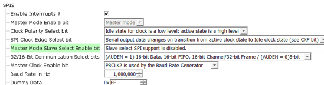
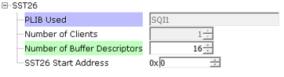
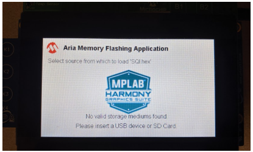
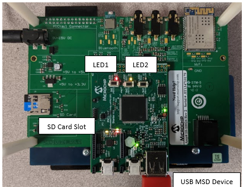
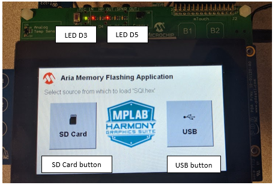
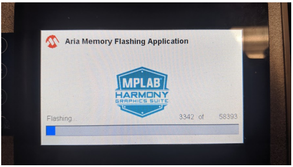

The aria_flash application uses the USB file systems in MPLAB Harmony and the USB driver to scan the MSD for a .hex file with resources and reads them sector by sector and programs the external non-volatile SQI memory. The Graphics Library is used to render graphics to the display. Using the DMA, the Low-Cost Controllerless (LCC) Display Driver continuously transfers frame data from the frame buffer out to the LCD display.
The application also features user touch input through the integrated touch screen on the display panel. Touch input from the touch controller goes through the I2C port, and the Input System Service acquires the touch input information from the Touch and I2C drivers. The Input System Service sends touch events to the Graphics Library, which processes these events and updates the frame data accordingly.
This configuration runs on the PIC32MZ EF Starter Kit with RGB565 GFX Interface board and WQVGA display. Two frame buffers are stored in the internal SRAM in a double buffer configuration, and the Low-Cost Controllerless (LCC) display driver is used to manage the DMA that transfers the frame buffer contents to the display via the EBI peripheral.
Since two 16-bit RGB565 frame buffers cannot fit into the internal device SRAM, this configuration uses two 8-bit buffers to support double-buffering. The 8-bit buffers contain the indices of 16-bit colors in a palette lookup table (CLUT). The graphics library renders the widgets by writing the index of a pixel color into the buffer. During a display line refresh, the LCC driver performs a palette lookup to convert the 8-bit indices to their 16-bit color equivalent for each line and then writes the line data to the display via DMA. Using 8-bit palettized buffers allows for double-buffering and eliminates tearing during rendering. On the other hand, the lookup table conversion requires extra processing time and reduces performance.
User touch input on the display panel is received thru the PCAP capacitive touch controller, which sends a notification to the Touch Input Driver. The Touch Input Driver reads the touch information over I2C and sends the touch event to the Graphics Library thru the Input System Service.
The USB peripheral is setup in MSD Host mode with the File System service support. It scans for a file named SQI.hex when a USB MSD device is connected.
The SD Card reader on the MEB-II is connected to the MZ EF via the SPI peripheral with the File System service support. It scans for a file named SQI.hex when an SD card MSD device is connected.
• Aria Graphics Library
• Input system service and touch driver
• Time system service, timer-counter peripheral library and driver
• Low-Cost Controllerless driver with global palette support
• 16-bit RGB565 color depth (8-bit palettized double buffering)
• EBI peripheral library and driver
• I2C peripheral library and driver
• SST26 SQI driver
• USB MSD driver (Host Mode)
• SD Card driver (supported via SPI)
• File System
• Images and Fonts for user interface stored in internal flash

The Project Graph diagram below shows the Harmony components that are included in this application. Lines between components are drawn to satisfy components that depend on a capability that another component provides.
Adding the “PIC32MZ EF Starter Kit BSP” and “Aria Graphics w/ PDA TM4301B Display” Graphics Template component into the project graph will automatically add the components needed for a graphics project and resolve their dependencies. It will also configure the pins needed to drive the display and the touch controller.
For the GFX Core component enable double buffering. (Global Palette Mode is enabled and grayed out since it is inherited from the Aria Graphics Library component.)

Additional components to support USB, SQI and SD Card needs to be added and connected manually.
Some of these components are fine with default settings, while other require some changes. The following is a list of all the components that required custom settings.
SD Card (SPI) component

SPI2 component

SST26

The SD Card (SPI) driver needs access to a chip select pin. Make sure pin RB14 is set to GPIO (Latch High, Pull Up)
The USB MSD driver in Host mode will require VBUS_AH detection. In the Pin Configuration window, make sure pin RB5 is setup for VBUS_AH
For SQI access, make sure all 7 pins for SQI1 is mapped.
To support the SD card reader with the SPI2 peripheral pins SCK2 and SDO2 needs to be mapped.
In MPLABX, open the project in gfx_apps\apps\aria_flash\firmware
|
Project Configuration Name |
BSP Used |
GraAria Graphics w/ PDA TM4301b Displayphics Template Used |
Description |
|
aria_th_mzef_sk_tm4301b.X |
PIC32MZ EF SK |
Aria Graphics w/ PDA TM4301b Display |
PIC32MZ EF Multimedia Expansion Board II with 4.3” WQVGA PCAP Touch display |
 Important! |
This application may contain custom code that is marked by the comments // CUSTOM CODE ... and // END OF CUSTOM CODE. When using the MPLAB Harmony Configurator to regenerate the application code, use the "Prompt Merge For All Differences" merging strategy and do not remove or replace the custom code. |
This section describes how to configure the supported hardware.
On the MEB II, the EBIWE and LCD_PCLK (J9) must be jumpered to use the internal SRAM for graphics frame buffer. The J9 jumper is located on the bottom of the MEB II board, beneath where the starter kit is plugged into the board. Refer to the following figure for the exact location.
Connect the PIC32MZ EF Starter Kit to the MEB II board
When power-on is successful, without a USB or SD Card MSD device attached to the ‘Target USB’ port the demonstration will display a screen with the message “No valid storage mediums found. Please insert a USB device or SD Card”:

Connect a USB MSD device or SD card at the slots indicated in the picture.

If a valid USB MSD device is connected, the display will show a USB button. LED1 (red on the starter kit) will light up. LED D3 on the MEB-II will also light up.
If a valid SD Card device is connected, the display will show a SD Card button. LED2 (yellow on the starter kit) will light up. LED D5 on the MEB-II will also light up.

Make sure the USB MSD device has FAT32 file system format and a valid external resources file named precisely ‘SQI.hex’ is copied inside.
Press and release the USB button on-screen. The application will initiate the data transfer on release of the button. Depending on the size of SQI.hex file (greater than 500 kilobytes), the application may freeze with no visual feedback, upwards of 30 seconds. It will then display a progress bar to indicate the transfer. The transfer completes when the progress bar is filled. The application will then display a button with ‘OK’.

|
MPLAB® Harmony Graphics Suite
|